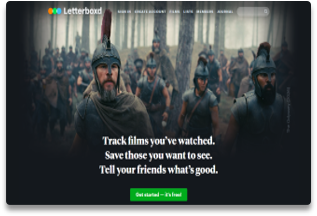
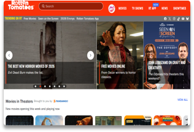
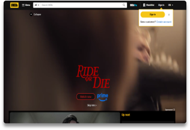
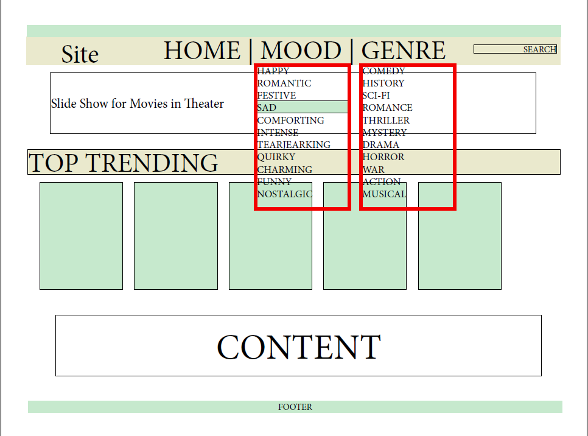
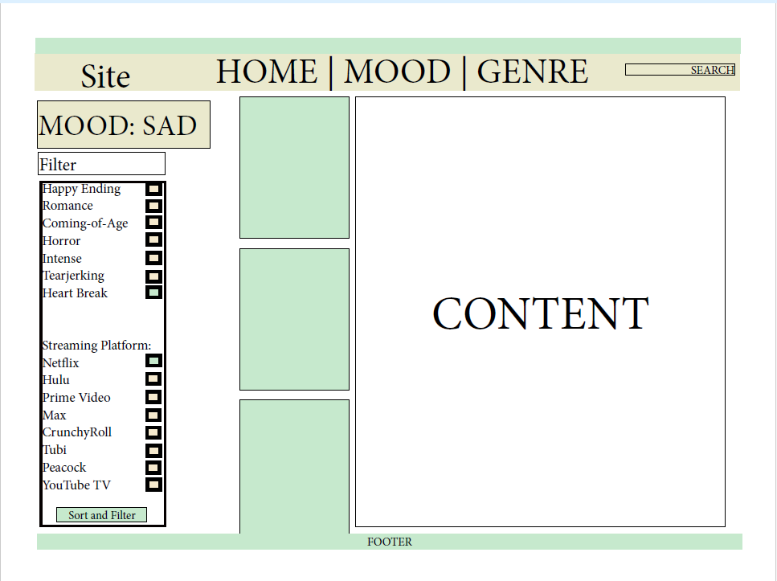
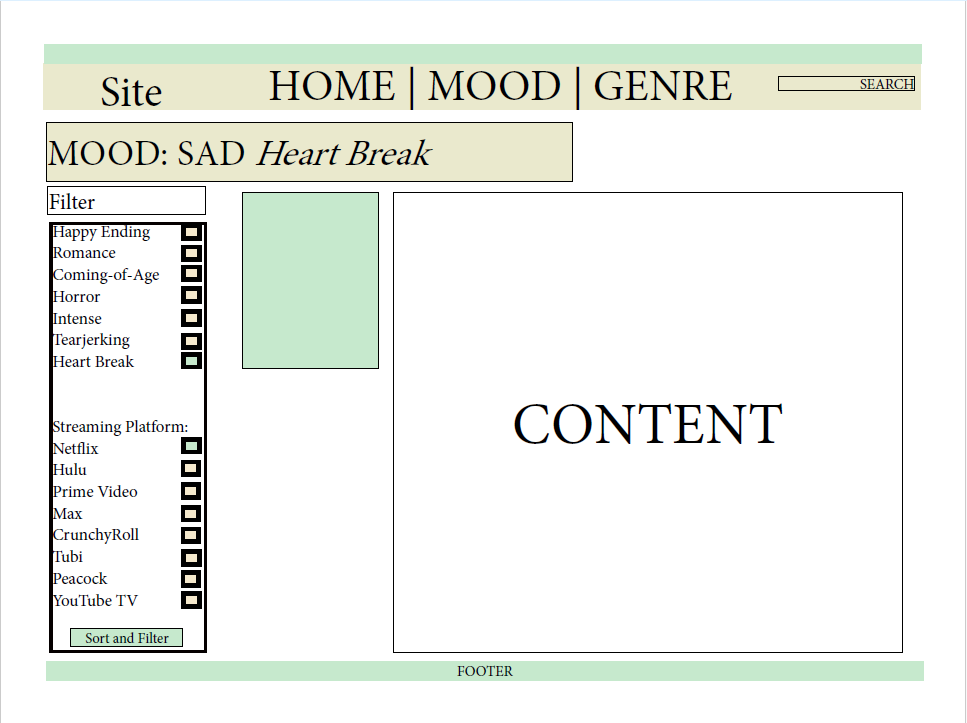

Project Overview
Designed a user-centered prototype for SceneScreen, a movie recommendation website created to help users discover films based on their preferences, mood, and genre. The project followed the complete UX design process, including user research, persona development, information architecture, wireframing, interactive prototyping, and usability testing. Feedback from participants was used to refine the interface and improve navigation, accessibility, and the overall user experience before development began.
The Problem
Finding a movie to watch is hard. In fact, people may spend more time finding a movie to watch than they do actually watching the movie. This is what ScreenScene works to fix. ScreenScene allows users to find movies via the traditional way, genre, and a non-traditional way via mood. Having users parse through movies based on their mood works to cut down search times. It works as a "vibes-based" search option. You just broke up with your partner? Explore the heartbroken category. You're feeling like you want something intense that will have you on the edge of your seat? Explore the intense category.
Personas
Primary Users: High Schoolers and Young Adults
- Age: 16-25
- These are people who want to find a movie quickly to casually watch either individually or in social settings. They will more than likely access the site from their phone, tablet, or laptop.
- Goals: Quickly find a movie to watch based on mood, discover trending movies, add movies to a watchlist.
- Frustrations: Spending too much time scrolling.
Primary Users: Families with Young Children
- Age: 28-55
- These are people who have family movie nights frequently. They use movies to connect with their family and provide entertainment. They would mostly access the site from a phone.
- Goals: Find age-appropriate family movies. Find movies based on streaming services. Quickly find a movie.
- Frustrations: Children becoming impatient during the search. Movies that seem kid-friendly by the cover and title but are not. Finding a movie but it is not on a platform they have access to.
Research

Letterboxd.com
Pros: When hovering over items they highlight and sometimes display additional information.
Cons: They have a limited number of categories which makes it hard to casually browse. To see a wider variety than the base categories a browse by filter must be selected even after a category was selected on the navigation bar.

RottenTomatoes.com
Pros: It has a category for users to find free movies to watch. They have a lot off different categories with headers to clearly separate them. The also organize movies by their rating system.
Cons: At first glance, it takes a bit of assumption to figure out what the rating mean as they use symbols. They have movies and tv shows in the same category at times, if a user wasn’t familiar with the titles, it could cause confusion.

IMDB.com
Pros: The site is visually pleasing. It has a lot of different visuals that pop on the black background of the website. There is a back to top toggle on the website. Users can sign in to add things to their watchlists.
Cons: There are a lot of different moving parts on the website which can overwhelm users. The menu has too many options.
Wireframes



Interactive Prototype
The SceneScreen prototype was developed in Adobe XD to demonstrate the user flow and functionality of the proposed movie recommendation experience.
Usability Testing
My user testers had three scenarios to test on the prototype.
Problem Scenario fo Josie:
Josie, age 20, has just broken up with her boyfriend of two years. Her best friend, Emma, came over to comfort her with the promise of ice cream and watching movies in bed. Josie wants to watch sad break up movies and cry her eyes out. Rather than going on Netflix and scrolling for half an hour, Emma decided to go on the ScreenScene website on her phone. She goes to the “Mood” category, selects “Sad”, then filters to “Heartbreak” and “Netflix”. She immediately receives the results and selects the movie “The Notebook” the second result in preparation for a long emotional night.
Problem Scenario for Ben
Ben, age 28, is watching his two nephews for the weekend. He just came back from the park and wants to watch a movie with his 5-year-old nephews to wind down. They don’t really know any movies that they want to watch yet and Ben’s knowledge on kid-friendly movies is not up-to-date. Ben goes on to ScreenScene and selects the “Family” category from the “Genre” dropdown list. He clicks the “PG” button that appears at the top of the filter list. He reads out a few of the spoiler free descriptions to his nephews to see if the movie sounds interesting to them. Once they decide on one, he clicks the title for more information and sees that it is available on Netflix, Hulu, and Prime Video. He clicks the link to Prime Video and is taken directly to the movie.
Problem Scenario for Janet
Janet, age 28, loves the movie, “The Perks of being A Wallflower”. She has watched the movie a total of 8 times in the last 3 months. She wants to know if there are any movies that are similar. She goes to the ScreenScene site and searches the movie title. She scrolls down past the movie description to the “Similar to….” category. She browses the titles and clicks the images for more information for the ones that she has found interesting and added them to her watchlist for later.
Their tasks were to:
- Navigate to the movie “The Notebook” by going to Mood> Sad> Heart Break> The Notebook.
- Navigate to the movie “Ice Age The Meltdown” by going to Genre> Family> PG> Ice Age the Meltdown
- Search for the movie “Perks of being a Wallflower” via the search bar.
On a scale of 1–5 (1 = Very Difficult, 5 = Very Easy), user testers rated the ease of completing the tasks at an average of 4.5 out of 5. All testers were able to complete the tasks without assistance, with each task taking less than one minute to complete. Testers particularly enjoyed the mood-based movie options. Although they expressed some disappointment with the prototype's limitations, they each rated SceneScreen 5 out of 5, citing its accessibility, ability to address movie indecisiveness, and user-friendly design.
What I Learned
This project taught me how important it is to design around the needs of the user. Using Adobe XD, I learned how to create wireframes, develop an interactive prototype, and turn my ideas into a functional user experience. Testing the prototype helped me see how users interacted with my design and showed me which features they found most useful. I also learned that small details, such as clear navigation and accessible options, can have a major impact on the overall user experience. Most importantly, I learned how valuable user feedback is throughout the design process and how it can help identify areas for improvement that I may not notice on my own.